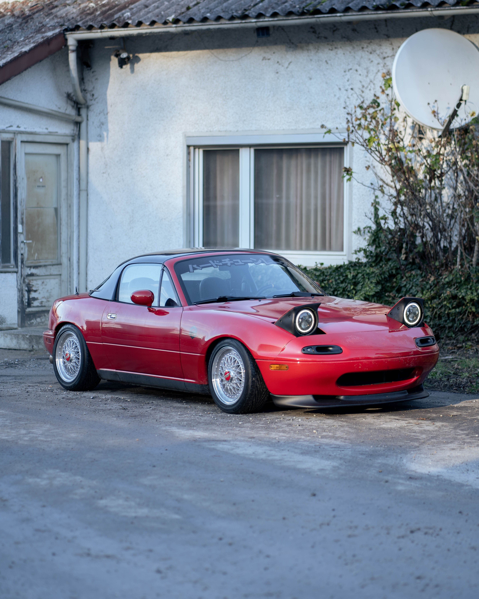

About Me
My name is John O'Reilly and I am the proud owner of Wheels On Fire. Ever since I was young, I've always been obsessed with cars. I would study every little detail about them, from their model, to their parts and how they work, even down to their history! I studied mechanical engineering in university, and somewhere along the way a friend of mine showed me a website that he had made. That inspired me to share my love for cars with everyone through the World Wide Web! I of course hope to achieve this by mixing in just a little bit of my humor!
Due to my overwhelming sense of perfectionism, I aim to critique these cars to the best of my ability in order to let people know my opinion of them (that being said, every car is a piece of art!) Take, for example the lovely Mazda MX-5:

I LOVE this car! It's so so fun to drive. Feels very sporty, yet makes for a pleasant, safe ride! The engine feels like it's your friend: it's super reliable! However, the car being so low-down can make it uncomfortable to get into and for some, a total nightmare!
See what I mean about my perfectionism?